se ruse noruse nuse nonuse showcmdse noshowcmd# 下载素材
git clone http://gitee.com/overmind1980/oeasyvim.git
#进入目录
cd oeasyvim
#还是从最简单的vim开始设置起
vi -u NONE oeasy.java
cursorlinecursorline:set cursorline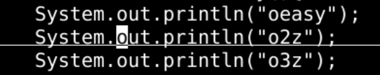
h 'cursorline'cursorline 加了单引号cursorline 是一个属性 option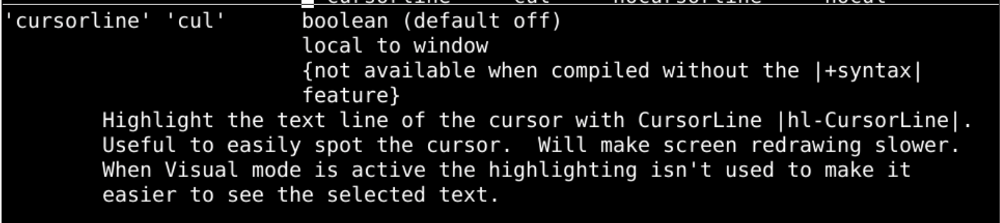
cursorcolumncursorcolumn:set cursorcolumn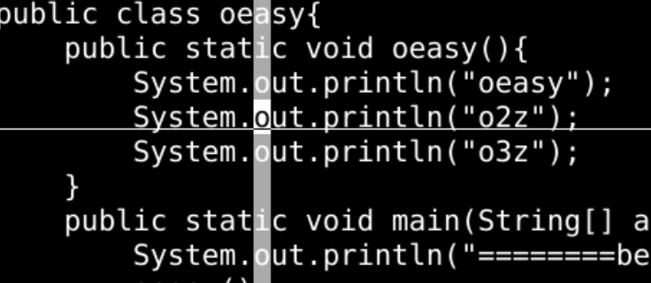
h 'cursorcolumn'cursorcolumn 加了单引号cursorcolumn 是一个属性 option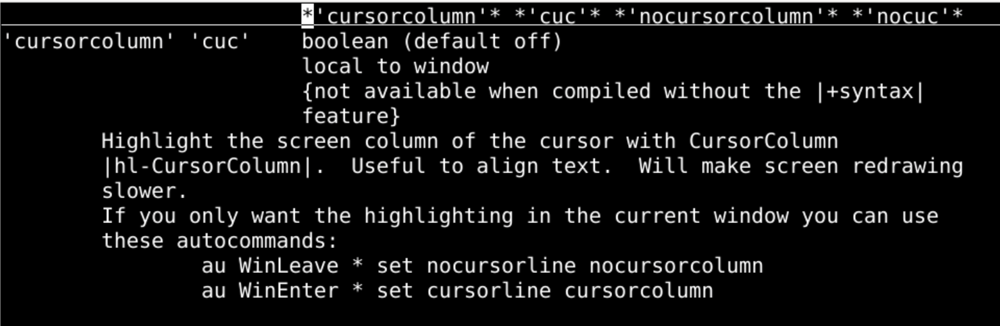
:h ruler 的时候statuslinestatusline 意思是状态横条statusline 也是一个可以 set 的东西:h statuslinestatusline 赋值oeasy:set statusline=oeasy
然后还需要设置 laststatus
:set laststatus=2:h 'statusline'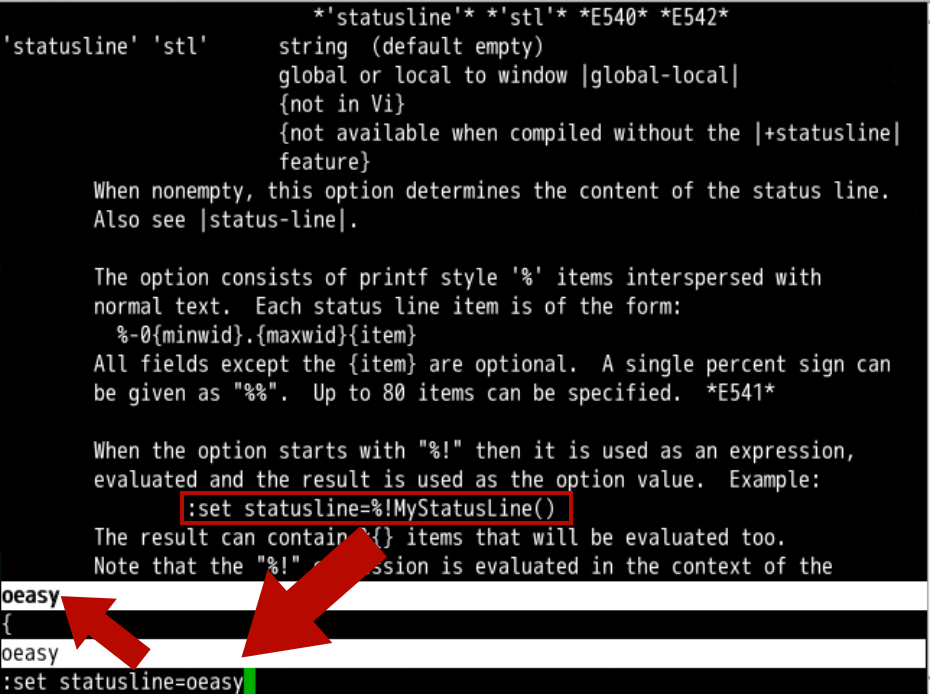
itemsitems 有不同的属性（数字、文本、标志）item 对应一个字母% 来进行转义F 对应文件名:set statusline=[oeasy]%F[oeasy]当前文件名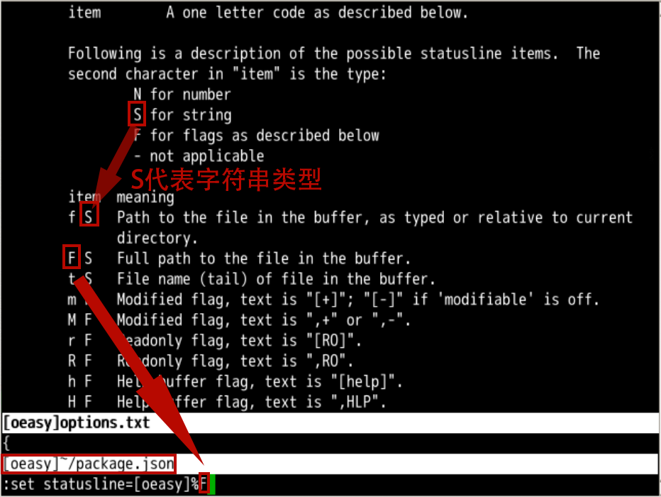
Flag 是标志位m 是一个关于是否已经修改的标志位%m 追加进入 statusline:set statusline=[oeasy]%F%m[+][+] 会消失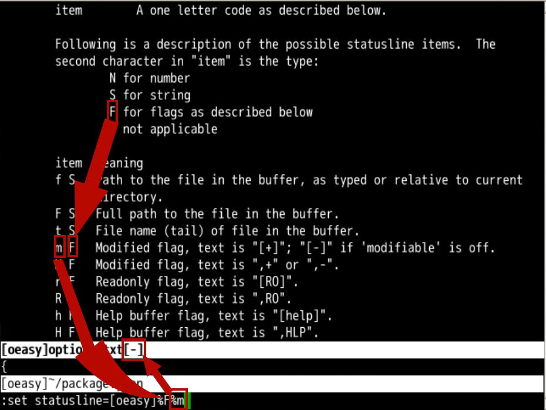
N 代表 Number 代表 item 是一个数值类型l、列号 c、百分比 p 都是数值类型[、] 把数值型变量分开%% 可以把 % 转义显示出来:set statusline=[oeasy]%F%m[%l,%c]%p%%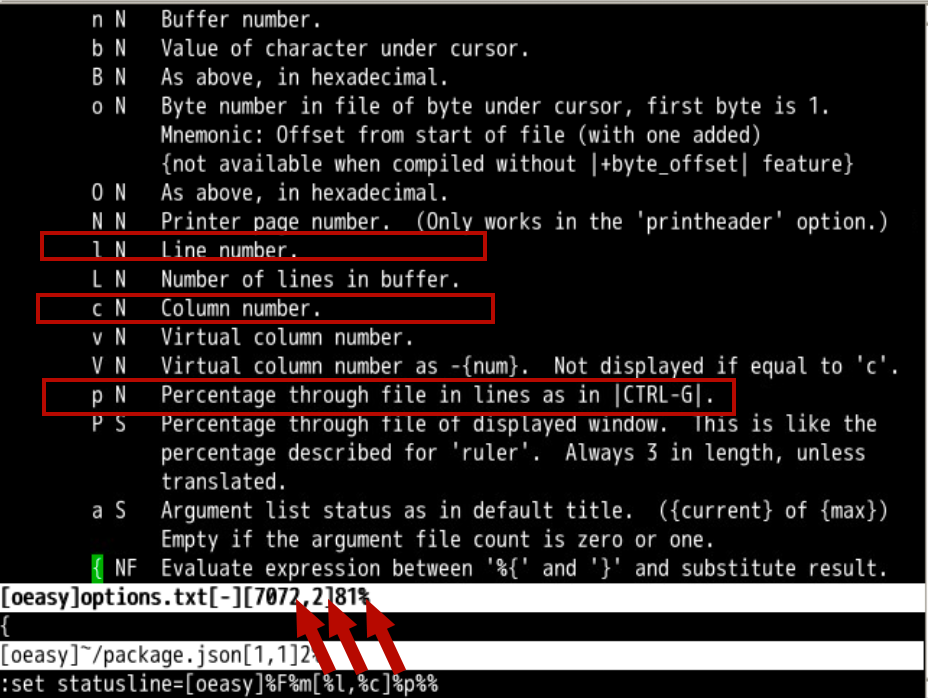
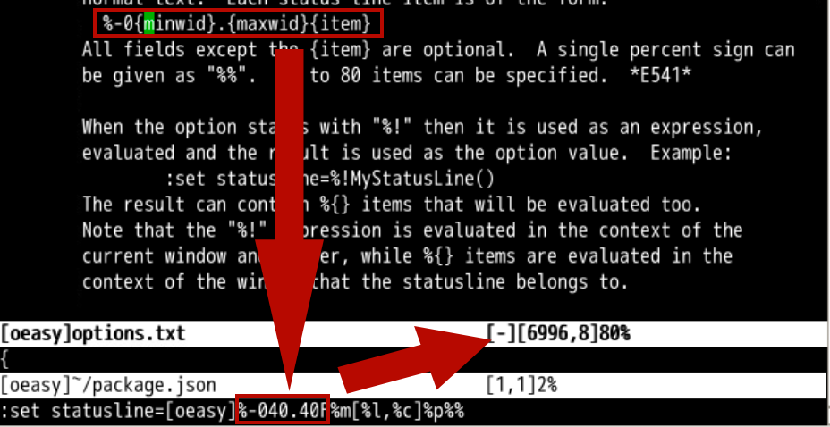
%-0{MinWidth}.{MaxWidth}{item}%-040.40F就是用 40 的固定宽度显示F:set statusline=[oeasy]%-040.40F%m[%l,%c]%p%%80 字符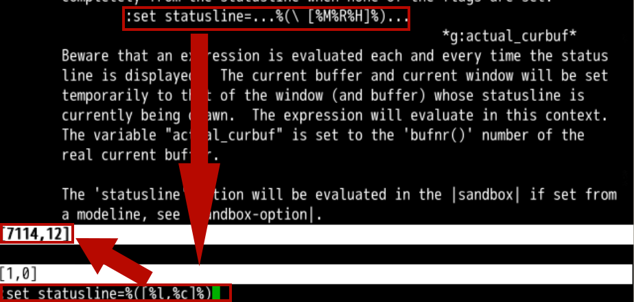
items group(、) 来封装这个组% 对 (、) 进行转义:set statusline=%([%l,%c]%):set statusline=%-010.10([%l,%c]%):set statusline=%(%F%m%)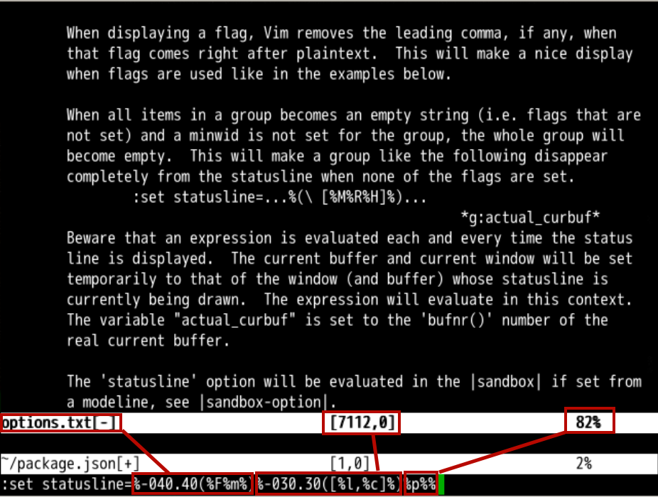
%-040.40(%F%m%)%-030.30([%l,%c]%)比例 %p%%
关于状态横条还有一个总开关
:set laststatus=0 关闭:set laststatus=2 开启itemitem 宽度的方法item 成组的方法还有一个总开关 laststatus
但是每次都要写很长的一段话来配置很麻烦啊
vim 每次自动配置好呢？🤔